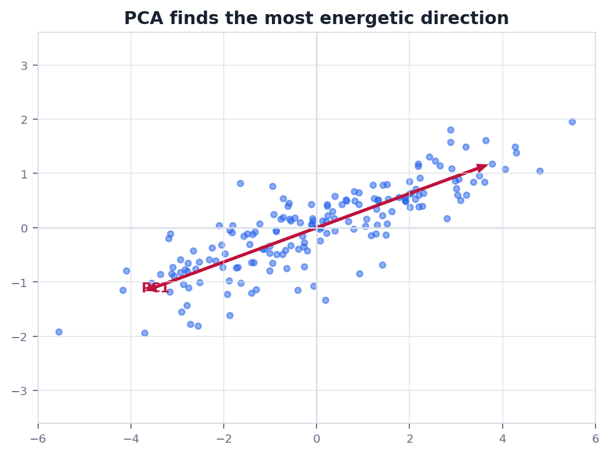
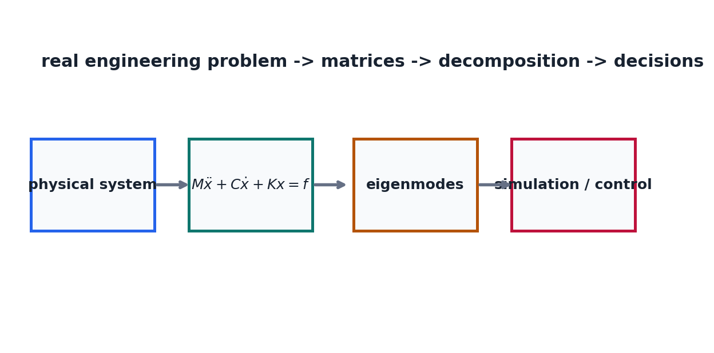

Route
0. 全章主线
应用不是另起炉灶, 而是把问题翻译成向量, 矩阵, 投影, 特征值和分解.
建模决定向量每一维表示什么.
矩阵化把关系写成线性或局部线性形式.
优化用投影, 梯度和二次近似求解.
分解提取主方向, 模态或低秩结构.
决策解释结果并回到现实约束.
Regression
1. 线性回归和最小二乘
回归是最小二乘在数据建模中的基本形态.
$$
\min_w \|Xw-y\|_2^2
$$
$X$ 的每一行是一条样本, 每一列是一种特征. 权重 $w$ 不只是参数表, 它给出每个特征方向对预测的线性贡献.
工程提醒特征量纲差异很大时, 最小二乘会受到尺度影响. 标准化, 正则化和条件数检查都很重要.
PCA
2. PCA, 协方差和降维
PCA 寻找数据方差最大的正交方向, 本质上是协方差矩阵的特征分解或数据矩阵的 SVD.
$$
C=\frac{1}{m}X^TX,\quad Cv=\lambda v
$$
最大特征值对应最大方差方向. 保留前 $k$ 个主成分, 就是在尽量少损失方差信息的前提下降维.
$$
X\approx U_k\Sigma_kV_k^T
$$
Deep Learning
3. 深度学习里的矩阵乘法
神经网络的线性层就是矩阵乘法, 但它通常嵌入非线性和批量张量计算中.
$$
Y=XW^T+b
$$
这里 $X$ 是批量输入, $W$ 的每一行是一组输出通道权重. 反向传播中的梯度同样是矩阵乘法和链式法则的组合.
表示向量编码样本, 词元, 像素块或特征.
变换权重矩阵改变坐标和特征空间.
优化Hessian 或近似二阶信息描述局部曲率.
Visualization
4. 图像, PCA 和物理系统工作流
同一套线性工具可以连接数据降维和工程仿真.


Physics
5. 物理问题: 从质量弹簧到仿真控制
真实系统建模通常是线性代数工具链的组合使用.
问题多自由度质量弹簧阻尼系统可写成 $M\ddot x+C\dot x+Kx=f(t)$. 其中 $M,C,K$ 分别编码质量, 阻尼和刚度.
$$
M\ddot x+C\dot x+Kx=f(t)
$$
分析时会用特征值理解自然频率, 用分解求解线性系统, 用二次型解释能量, 用状态空间矩阵做控制. 这正是前九章工具在一个问题里的汇合.
Checklist
6. 实战清单与易错点
应用题的关键是把现实对象和矩阵维度说清楚.
实战清单
- 向量的每一维代表什么?
- 矩阵的行和列分别对应什么对象?
- 是精确线性, 近似线性, 还是局部线性?
- 用到的分解是否满足前提条件?
- 输出能否回到物理量或业务量解释?
高频错误
- 只会调库, 不知道矩阵维度含义.
- 把相关方向误解为因果关系.
- 忽略数据尺度导致数值病态.
- 把局部线性近似当成全局真理.
记住线性代数应用的第一步不是选算法, 而是把现实问题翻译成清晰的向量和矩阵对象.